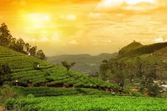

RAJASTHAN
Rajasthan has artistic and cultural traditions which reflect the ancient Indian way of life. It is located on the northwestern
side of the India, where it comprises most of the wide and inhospitable.

Rajasthan Famous
- Highly cultivated classical music
- Jewelry and Gemstones
- Paintings
- Carpets
- Pottery
- JodhpuriJuttis
- Spices
- Metal Work
- Puppets, Stuffed Dolls, and Toys
- Sweets
back